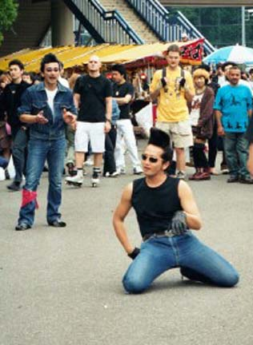

And the earth moved...
Tokyo, Japan
We were awoken just before 1am on Monday by our bed shaking violently. This was accompanied by a loud moaning sound. Half awake and half asleep Sue started grumbling about how the people in the room next door should keep their love-making down and every now and then threatened to call reception to complain. Eight hours later she read about an earthquake measuring 5.1 on the Richter scale that had hit Tokyo in the early hours of the morning! Needless to say, she was pretty relieved that she hadn't called the reception to complain about our athletic neighbours!! Of course, I'd been aware that it was an earthquake at the time, and that the loud groaning noise was probably the building swaying, but I thought it might be best to leave Sue in the dark otherwise she may well have freaked out a little. I still can't believe quite how much the bed was moving, but then it's good to be reminded of what Mother Nature is capable of from time-to-time.
You’ll be right to assume that this didn’t occur in Sydney. It actually happened while we were on the 35th floor of the New Otani Hotel in Tokyo. You’ll probably be as surprised as we are that we’re in Japan – one minute Nathan was being asked to go on a business trip and within 24 hrs we were here!
Tokyo seems like a crazy place – there are just so many people in a relatively small area. We went to a part of the city called Shibuya, which has the busiest pedestrian crossing in the world. I cannot begin to describe to you how busy it was. I mean, we tried to stop on a couple of occasions to take a look at the map, but it was just about impossible because of the constant flow of people. It was somehow different from the crowds we've been used to in places like India. There, people are milling around, chatting or drinking chai. In Tokyo, it seems, everyone had a mission and so there is absolutely no dilly-dallying and the crowds just, sort of, surge.
Sunday is the day to visit Yoyogi Park - where people let their hair down after the hustle and bustle of the working week. This is also the best place to witness the ‘alternative cultures’ of Tokyo. There are girls with foot tall platform boots dressed as doctors with black arm-bands on, guys with mohicans and tartan skirts and there are even the occasional grown women with pink frilly dresses on! We hung around in Yoyogi for hours and sat watching the meeting of the Tokyo Rocker-Billy Club while we scoffed noodles and raw fish. These guys meet every Sunday in the park to dance to Rock'n'Roll hits. They don their black leathers, spray on tonnes of hairspray to achieve the tallest quiffs you've ever seen and dance to numbers like 'Blue Suede Shoes' and 'Great Balls fo Fire.' One thing you do wonder though is, what happens to these guys on a Monday morning? I can't imagine that they go into work looking like this, but then with all that back-combing and hairspray, how on earth would it be possible to achieve flattened hair? And, do they really exchange their tight jeans and cowboy boots for grey suits and brogues?
Our last weekend was spent in Tokyo’s bay area. The flashy monorail carries you over the 4km long Rainbow Bridge to land you in a high tech world. First off we went on the Big Wheel in Palette Town, then we visited the impressive Toyota showroom where you press a button and the latest Lexus automatically moves out from the 3-storey car park right in front of you for your close perusal. At the Sony shop we played with their robot dogs, one of which was shooting around on a skateboard. They were kind of cute and far easier to look after than a real dog. It’s amazing here - electronics are just so far ahead of anywhere else in the world. Finally, we watched a band called Kaleidoscope playing on the terrace overlooking Rainbow Bridge. They were excellent, even if we didn’t understand a word they were singing. But, the Japanese girls seemed to love them so we bought their latest CD as a reminder of our time here in Tokyo!
This is our first trip to foreign climes since setting up home in Sydney and it seems strange to actually think of returning back home to Sydney. I guess we are experiencing the difference between travelling which means always being on the move, and staying in one place and just having short holidays away.
So, do we still miss being carefree, seeing new things every day, travelling the world, meeting new friends, staying in hotels and eating out all of the time?.....
What do you think?
You’ll be right to assume that this didn’t occur in Sydney. It actually happened while we were on the 35th floor of the New Otani Hotel in Tokyo. You’ll probably be as surprised as we are that we’re in Japan – one minute Nathan was being asked to go on a business trip and within 24 hrs we were here!
Tokyo seems like a crazy place – there are just so many people in a relatively small area. We went to a part of the city called Shibuya, which has the busiest pedestrian crossing in the world. I cannot begin to describe to you how busy it was. I mean, we tried to stop on a couple of occasions to take a look at the map, but it was just about impossible because of the constant flow of people. It was somehow different from the crowds we've been used to in places like India. There, people are milling around, chatting or drinking chai. In Tokyo, it seems, everyone had a mission and so there is absolutely no dilly-dallying and the crowds just, sort of, surge.
Sunday is the day to visit Yoyogi Park - where people let their hair down after the hustle and bustle of the working week. This is also the best place to witness the ‘alternative cultures’ of Tokyo. There are girls with foot tall platform boots dressed as doctors with black arm-bands on, guys with mohicans and tartan skirts and there are even the occasional grown women with pink frilly dresses on! We hung around in Yoyogi for hours and sat watching the meeting of the Tokyo Rocker-Billy Club while we scoffed noodles and raw fish. These guys meet every Sunday in the park to dance to Rock'n'Roll hits. They don their black leathers, spray on tonnes of hairspray to achieve the tallest quiffs you've ever seen and dance to numbers like 'Blue Suede Shoes' and 'Great Balls fo Fire.' One thing you do wonder though is, what happens to these guys on a Monday morning? I can't imagine that they go into work looking like this, but then with all that back-combing and hairspray, how on earth would it be possible to achieve flattened hair? And, do they really exchange their tight jeans and cowboy boots for grey suits and brogues?
Our last weekend was spent in Tokyo’s bay area. The flashy monorail carries you over the 4km long Rainbow Bridge to land you in a high tech world. First off we went on the Big Wheel in Palette Town, then we visited the impressive Toyota showroom where you press a button and the latest Lexus automatically moves out from the 3-storey car park right in front of you for your close perusal. At the Sony shop we played with their robot dogs, one of which was shooting around on a skateboard. They were kind of cute and far easier to look after than a real dog. It’s amazing here - electronics are just so far ahead of anywhere else in the world. Finally, we watched a band called Kaleidoscope playing on the terrace overlooking Rainbow Bridge. They were excellent, even if we didn’t understand a word they were singing. But, the Japanese girls seemed to love them so we bought their latest CD as a reminder of our time here in Tokyo!
This is our first trip to foreign climes since setting up home in Sydney and it seems strange to actually think of returning back home to Sydney. I guess we are experiencing the difference between travelling which means always being on the move, and staying in one place and just having short holidays away.
So, do we still miss being carefree, seeing new things every day, travelling the world, meeting new friends, staying in hotels and eating out all of the time?.....
What do you think?

The Tokyo Rocker-Billy Club meeting in Yoyogi Park

Tsukiji Fish Market - notice the stall attendant weighing the octopus with a fag hanging out of his mouth!

The Rainbow Bridge at night. So named, for its changing coloured lights.

Another Buddha for Sue's collection!